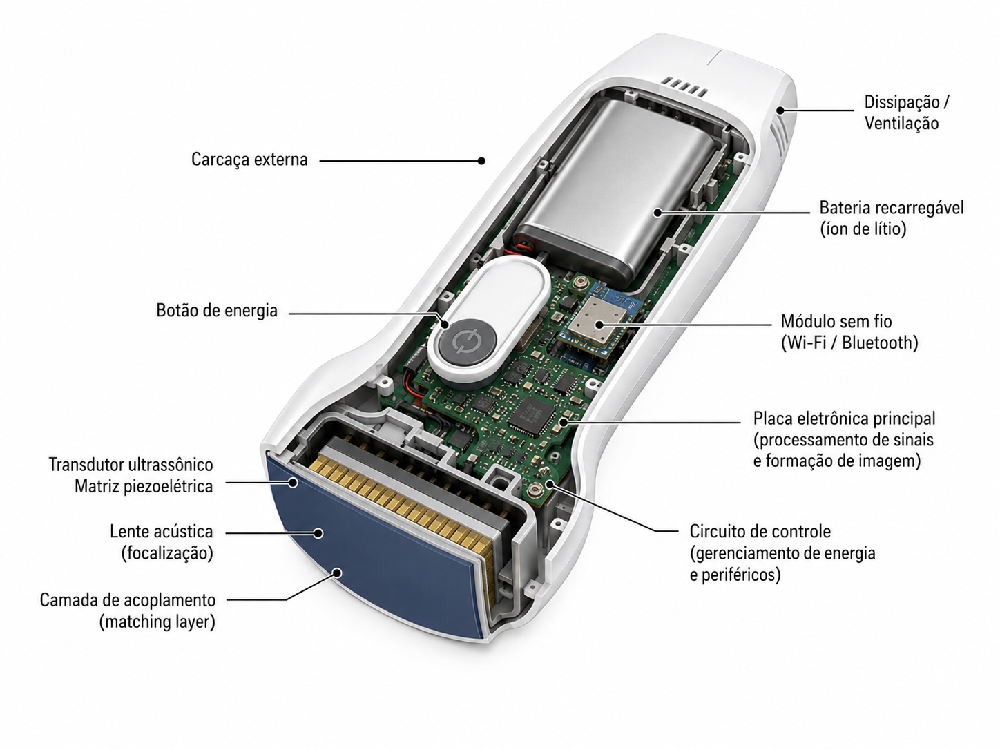

content/00-inicio.mdPOCUS UPA: Konted C10RL + My USG
Material de referência para uma primeira turma de médicos e enfermeiros de UPA usando o aparelho USG Konted C10RL com o app My USG.

Objetivo da primeira aula
Ao final da aula, a equipe deve conseguir:
- cuidar do aparelho antes, durante e depois do plantão;
- ligar, carregar, conectar e reconhecer falhas comuns;
- abrir o My USG, fazer login, conectar à sonda e gerar uma imagem teste;
- ajustar profundidade, ganho, foco, preset e orientação;
- entender o que é POCUS: exame focado para responder uma pergunta clínica imediata;
- reconhecer quando o exame está limitado e quando chamar alguém mais experiente.
Ordem recomendada
- Segurança, limpeza, bateria, gel e armazenamento.
- Aparelho C10RL: faces convexa/linear, botão físico, porta Type-C e indicadores.
- Conexão no My USG: Wi-Fi, senha da sonda, senha inicial do app e problemas comuns.
- Imagem básica: marcador, profundidade, ganho, TGC, foco, congelar, salvar.
- Protocolos de UPA: eFAST, pulmão, bexiga/rim, partes moles, vascular e acesso venoso.
- Armadilhas: imagem bonita com pergunta ruim, Doppler mal ajustado, falso positivo/negativo.
- Treino prático supervisionado.
Regra central
POCUS não é “fazer ultrassom completo”. É responder uma pergunta clínica limitada, no leito, com documentação clara do que foi visto e do que não foi visto.
content/01-aparelho-c10rl.mdAparelho C10RL
O material local identifica o aparelho como Konted C10RL, sonda dupla com cabeça convexa/cardíaca e linear, conectada ao app My USG.

Componentes que a equipe deve reconhecer
- Marca de orientação: deve ser alinhada com o marcador da tela.
- Marca central/mid-line: ajuda a centralizar o alvo.
- Botão físico: liga, congela/retorna ao vivo e alterna a cabeça ativa conforme tempo de pressão.
- Porta Type-C: usada para cabo/recarga conforme dispositivo e cabo correto.
- Indicadores de bateria: observar antes de sair para atendimento.
- Cabeça convexa: abdome, bexiga, rim, eFAST, pulmão profundo e avaliação cardíaca limitada.
- Cabeça linear: partes moles, vascular, acesso venoso, nervo, tireoide, estruturas superficiais.
Especificações úteis para aula
| Item | Informação prática |
|---|---|
| Conexão | Wi-Fi e USB/Type-C conforme dispositivo e cabo compatível |
| App | My USG |
| Modos | B, B/M, Color, PDI, PW e combinações conforme preset/cabeça |
| Linear | 7,5/10 MHz; profundidades superficiais, como 20 a 100 mm nos PDFs locais |
| Convexa/cardíaca | baixa frequência; profundidades maiores, como 90 a 305 mm nos PDFs locais |
| Bateria | bateria interna; PDFs locais citam cerca de 2800 mAh e uso em torno de 3 horas |
| Idioma | há suporte a português do Brasil nos PDFs comerciais locais |
Botão físico
- Pressionar para ligar.
- Manter pressionado para desligar.
- Pressão intermediária alterna a cabeça de varredura em modelos de dupla cabeça.
- Se não desligar, o manual orienta segurar o botão por 15 a 20 segundos.
Antes de levar para a sala
- Conferir carga.
- Conferir se a tampa/vedação da porta está adequada antes de limpeza.
- Conferir se há gel suficiente.
- Conferir se o celular/tablet já tem My USG instalado.
- Fazer um teste rápido de conexão antes da turma chegar.
Fontes locais
content/02-conexao-my-usg.mdConexão My USG
A conexão deve ser ensinada como uma sequência curta e repetível. O principal ponto operacional dos manuais locais é: a senha do Wi-Fi da sonda é o número de série da sonda em letras minúsculas.

Primeiro acesso ao app
O vídeo local mostra a tela de login do My USG com as opções Administer e Operator. Para configurar acesso administrativo:
- tocar em Administer;
- usar a senha inicial 123456;
- se fizer sentido para o treinamento, ativar Auto login;
- confirmar e seguir para a tela de varredura.
Wi-Fi da sonda
- Ligue a sonda.
- Aguarde os indicadores de bateria/funcionamento.
- No celular/tablet, abra Wi-Fi.
- Selecione a rede da sonda. O nome costuma terminar com parte do SN.
- Digite a senha usando o SN em minúsculas, sem espaços.
- Abra o My USG.
- Confirme que a sonda aparece conectada.
- Coloque gel e gere imagem teste em modo B.
Cabo USB/Type-C
Os PDFs locais descrevem conexão por USB/Type-C, mas os screenshots de conversa com o fornecedor registram uma limitação prática importante: iPhone deve ser tratado como conexão por Wi-Fi; Android pode usar Wi-Fi ou cabo USB quando o cabo compatível está disponível. Para a primeira aula na UPA, considere Wi-Fi como caminho padrão.
Troubleshoot rápido
| Problema | Causa provável | Solução prática |
|---|---|---|
| Wi-Fi da sonda não aparece | sonda desligada, bateria baixa, inicialização incompleta | ligar, carregar alguns minutos, aproximar o celular/tablet |
| Senha recusada | SN digitado com maiúsculas, espaço ou erro de caractere | redigitar o SN todo em minúsculas |
| App pede senha de Administer | primeiro acesso/configuração | usar senha inicial 123456 e avaliar auto login para treino |
| Wi-Fi conecta, mas não sai imagem | app travado, sonda ainda não selecionada, outro aparelho conectado | fechar/abrir app, selecionar sonda, desconectar outro dispositivo |
| Imagem trava ou atrasa | interferência ou canal Wi-Fi ruim | aproximar aparelho, reduzir distância, reiniciar sonda/app; manual cita ajuste de canal Wi-Fi com suporte |
| Cabo não funciona | lado A/B invertido, cabo incompleto, iPhone sem suporte prático via cabo | inserir totalmente, testar outro lado do conector, preferir Wi-Fi no iPhone |
| Tela preta ou imagem não atualiza | app congelado ou conexão instável | fechar app, desconectar/reconectar, recarregar sonda |
Conduta na aula
Antes de iniciar protocolos clínicos, cada participante deve conseguir fazer três tarefas sem ajuda: conectar ao Wi-Fi da sonda, abrir imagem B e congelar/salvar uma imagem teste.
content/03-cuidados-limpeza.mdCuidados, limpeza e armazenamento
O cuidado com a sonda é parte do treinamento. A equipe precisa tratar o aparelho como dispositivo compartilhado de beira-leito: limpar, secar, carregar, guardar e registrar problema.
Cuidados básicos
- Não modificar software, cabo ou componentes.
- Não puxar pelo cabo.
- Não deixar cair.
- Não guardar com gel seco.
- Não guardar molhado.
- Não usar se houver trinca, afundamento do transdutor, porta aberta, corrosão ou imagem persistentemente degradada.
- Conferir bateria antes de sair para atendimento.
Limpeza após uso em pele íntegra
- Desligar ou congelar e interromper o exame.
- Remover gel imediatamente com pano macio sem fiapos ou papel apropriado.
- Evitar fricção agressiva no transdutor.
- Limpar superfície externa conforme produto aprovado pela instituição.
- Secar antes de guardar.
- Checar integridade da sonda.
Desinfecção
- Para contato com pele íntegra, usualmente é necessário baixo nível de desinfecção, conforme política institucional.
- Para mucosa, pele não íntegra, sangue, secreções ou procedimento invasivo, seguir protocolo institucional de proteção/cobertura e desinfecção de alto nível quando aplicável.
- Não improvisar produto químico sem compatibilidade com o fabricante e com o serviço de controle de infecção.
Pontos do manual local
O manual local orienta: usar EPI, remover gel antes de secar, evitar entrada de líquido no corpo da sonda, secar em ambiente ventilado e interromper uso se houver rachaduras, protrusão/afundamento do transdutor ou dano estrutural.
Checklist para início do plantão
- Sonda carregada.
- Celular/tablet carregado.
- My USG instalado e testado.
- Gel disponível.
- Produto de limpeza disponível.
- Local de guarda definido.
- Alguém sabe a senha Wi-Fi/SN da sonda.
content/04-controles-imagem.mdControles de imagem
Para iniciantes, a prioridade é gerar imagem suficiente para responder a pergunta clínica. A primeira aula deve treinar mão, tela e corpo ao mesmo tempo.

Sequência de ajuste
- Escolha a cabeça correta: convexa para profundo, linear para superficial.
- Escolha preset próximo do órgão/estrutura.
- Encontre a estrutura no modo B.
- Ajuste profundidade: o alvo deve ocupar a tela, sem profundidade sobrando demais.
- Ajuste ganho: imagem nem lavada, nem escura.
- Ajuste foco na região de interesse.
- Use TGC se superficial e profundo precisam de ganhos diferentes.
- Congele e salve apenas quando a imagem responde a pergunta.
Controles do My USG presentes nos manuais
| Controle | Uso prático |
|---|---|
| Preset | ponto de partida para órgão/estrutura |
| GN/gain | clarear ou escurecer a imagem inteira |
| D/depth | aumentar ou reduzir profundidade |
| TGC | ajustar ganho por profundidade |
| ENH | realce de imagem |
| DR | faixa dinâmica/contraste |
| F/frequency | equilibrar resolução e penetração |
| Focus | posicionar foco no alvo |
| U/D e R/L flip | corrigir orientação quando necessário |
| Freeze/Live | congelar ou voltar para imagem ao vivo |
| Save image/video | registrar imagem ou clipe |
Movimentos da sonda
- Deslizar: muda a janela.
- Inclinar/fanar: varre o órgão.
- Rotacionar: muda eixo longo/eixo curto.
- Comprimir: útil em veias, partes moles e avaliação dinâmica.
- Rocking: centraliza alvo sem perder contato.
Erro comum
Não “consertar” tudo no ganho. Primeiro confirme contato, gel, face correta, preset, profundidade e orientação.
content/05-protocolos-pocus.mdProtocolos POCUS para UPA
A primeira turma não precisa sair fazendo laudo completo. Ela precisa aprender perguntas clínicas seguras, repetíveis e úteis para emergência.
Módulos prioritários
| Módulo | Pergunta clínica | Transdutor |
|---|---|---|
| eFAST/FAST | há líquido livre ou pneumotórax em trauma? | convexa/cardíaca e linear para pleura se disponível |
| Pulmão | há B-lines difusas, consolidação, derrame, pneumotórax provável? | linear ou convexa |
| Bexiga/rim | bexiga cheia? hidronefrose grosseira? | convexa |
| Partes moles | abscesso ou celulite? corpo estranho superficial? | linear |
| Vascular | veia compressível? trombose proximal evidente? | linear |
| Acesso venoso | visualizar vaso e ponta da agulha | linear |
| Cardíaco focado | derrame pericárdico? atividade cardíaca? disfunção grosseira? | convexa/cardíaca |
eFAST inicial
- Janelas: RUQ, LUQ, pelve, subxifoide/paraesternal e pleura anterior.
- Treinar primeiro anatomia normal.
- Não prometer exclusão total de lesão; exame negativo não encerra avaliação clínica.
Pulmão
- Lung sliding presente reduz probabilidade de pneumotórax naquele ponto.
- Ausência de sliding não é pneumotórax automaticamente.
- B-lines difusas sugerem síndrome intersticial, mas contexto define causa.
- Derrame pleural precisa ser diferenciado de consolidação/atelectasia.
Partes moles
- Celulite: padrão em casca de laranja/cobblestoning.
- Abscesso: coleção hipoecoica/complexa, geralmente compressível ou com reforço posterior.
- Cuidado com vasos antes de drenagem.
Acesso vascular
- Primeiro identificar artéria e veia.
- Confirmar compressibilidade da veia.
- Usar eixo curto ou longo conforme habilidade.
- A regra de segurança é ver a ponta da agulha antes de avançar.
Documentação mínima
- Pergunta clínica.
- Janela(s) avaliada(s).
- Achado positivo/negativo.
- Limitação do exame.
- Conduta que mudou ou não mudou.
content/06-armadilhas.mdArmadilhas comuns e soluções
Conexão e aparelho
| Armadilha | Solução |
|---|---|
| Começar a aula sem teste prévio | ligar, conectar e gerar imagem antes da turma chegar |
| Confundir senha do app com senha Wi-Fi da sonda | app Administer usa 123456 inicialmente; Wi-Fi usa SN em minúsculas |
| Tentar cabo no iPhone como plano principal | usar Wi-Fi como padrão no iPhone |
| Cabo USB não funciona | testar orientação A/B, inserção completa e outro cabo compatível |
| Esquecer de carregar | criar rotina de carga ao fim do plantão/aula |
Imagem
| Armadilha | Solução |
|---|---|
| Alvo pequeno no meio da tela | reduzir profundidade |
| Imagem muito clara | reduzir ganho |
| Imagem escura | aumentar ganho, usar mais gel, melhorar contato |
| Estrutura profunda com linear | trocar para convexa |
| Estrutura superficial com convexa | trocar para linear |
| Marcador invertido confundindo direita/esquerda | alinhar marcador da sonda com marcador da tela antes de ensinar anatomia |
Interpretação clínica
- Derrame pericárdico não significa tamponamento automaticamente.
- Ausência de lung sliding não significa pneumotórax automaticamente.
- B-lines não significam sempre edema cardiogênico.
- IVC isolada não define volemia.
- FAST negativo não exclui lesão abdominal.
- Hidroureter/hidronefrose leve pode ser difícil para iniciante.
- Abscesso pequeno pode parecer vaso: usar compressão e Doppler quando necessário.
Procedimento
Se perdeu a ponta da agulha, pare. Reencontre a ponta antes de avançar.
Frase para ensinar aos iniciantes
“Se a imagem não responde a pergunta, ela não serve ainda. Ajuste a imagem ou declare o exame limitado.”
content/07-videos-fontes.mdImagens, vídeos e fontes
Esta página reúne materiais para estudo antes e depois da aula.
Materiais locais do aparelho
- Manual rápido My USG USB/Wi-Fi
- Manual C10RL Pro + My USG
- PDF C10RL double head wireless ultrasound
- PDF comercial C10RL 3 in 1 Color Doppler
- Vídeo local de senha/admin no My USG
Fontes externas úteis
- ACEP Sonoguide: guia de ultrassom de emergência por aplicações.
- ACEP Ultrasound: recursos e políticas de ultrassom em emergência.
- POCUS Atlas: biblioteca visual de achados em POCUS.
- Core Ultrasound: vídeos e aulas de ultrassom de emergência.
- POCUS 101: tutoriais introdutórios e protocolos.
- LITFL Ultrasound Library: revisões práticas para emergência e terapia intensiva.
- Show Me The POCUS: vídeos curtos de achados e técnicas.
- Rays of Gray: recursos de aprendizagem visual.
- Ultrasound Cases: casos com imagens e correlação clínica.
- AIUM: limpeza e preparo de transdutores: referência de limpeza/desinfecção.
Raindrop
O conector Raindrop não está disponível neste ambiente. Para incorporar seus links salvos depois, exporte do Raindrop em CSV/HTML/JSON ou conecte um app compatível; eu organizo as referências nesta página.
content/08-roteiro-aula.mdRoteiro da aula
Duração sugerida: 2h30 a 3h
| Tempo | Atividade |
|---|---|
| 0-10 min | Objetivo: POCUS como resposta focada a pergunta clínica |
| 10-25 min | Cuidados com aparelho, limpeza, carga, gel, armazenamento |
| 25-45 min | Conexão My USG: senha app, Wi-Fi da sonda, teste de imagem |
| 45-65 min | Controles básicos: profundidade, ganho, foco, preset, freeze/save |
| 65-85 min | Demonstração: convexa e linear, orientação e movimentos |
| 85-125 min | Rodízio prático: cada participante conecta, gera, ajusta e salva imagem |
| 125-160 min | Protocolos prioritários: eFAST, pulmão, bexiga/rim, partes moles e acesso vascular |
| 160-180 min | Armadilhas, checklist final e plano de prática supervisionada |
Primeiro bloco: aparelho
Mostre a sonda desligada, ligada, carregando e conectada. A equipe deve tocar no aparelho antes de discutir protocolos.
Segundo bloco: conexão
Faça uma demonstração com erro proposital:
- senha Wi-Fi com letra maiúscula;
- app pedindo senha de Administer;
- imagem preta por conexão perdida;
- profundidade errada.
Depois peça para alguém resolver usando o checklist.
Terceiro bloco: imagem
Use uma estrutura fácil: veia superficial, bexiga ou parede torácica. Evite começar por janela cardíaca difícil.
Quarto bloco: aplicação clínica
Ensine cada protocolo como pergunta clínica:
- trauma: “vejo líquido livre?”
- dispneia: “há padrão difuso de B-lines? há pneumotórax provável?”
- dor lombar/oligúria: “há hidronefrose grosseira? bexiga está cheia?”
- pele: “há coleção drenável?”
- acesso: “vejo vaso e ponta da agulha?”
Fechamento
Cada participante deve demonstrar: conectar, gerar imagem, ajustar ganho/profundidade, congelar, salvar e verbalizar uma limitação do exame.
content/99-como-editar-publicar.mdComo editar e publicar
Este material foi montado para ser editado no Obsidian e publicado como site estático.
Editar
- Abra
/Users/diogenes/vaults/usg_treinamentono Obsidian. - Edite as páginas em
content/. - Guarde imagens novas em
assets/media/. - Guarde PDFs/fontes locais em
references/. - Rode
python3 scripts/build_site.py. - Abra
index.html.
Publicar
Para publicar em GitHub Pages, Netlify, Vercel, Cloudflare Pages ou hospedagem estática, envie:
index.htmlcontent/assets/references/docs/README.md
Atualização rápida
No macOS, você pode dar duplo clique em atualizar-site.command.
Privacidade
Os screenshots IMG_6455.png e IMG_6456.png ficam preservados na raiz do vault como evidência local, mas não entram no site porque contêm conversa privada. O conteúdo técnico deles foi convertido em texto.